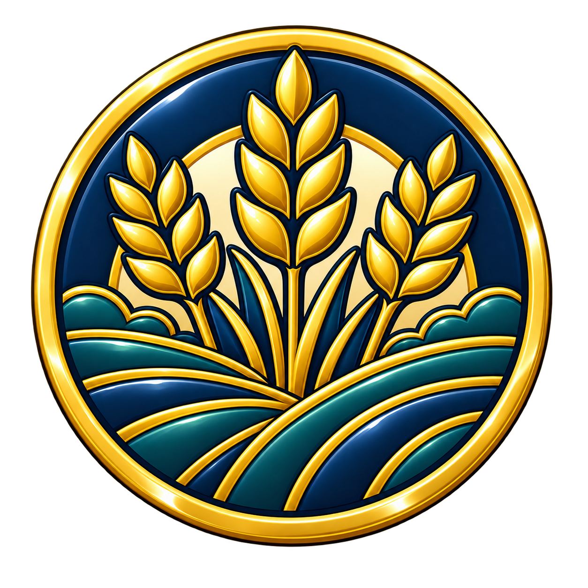

Branding
01-branding-cross-wings.pngFifteen individually generated transparent PNG icons mapped to one primary newsletter role each. Use the exact section match first; use an approved fallback only when the map allows it.
01-branding-cross-wings.png02-pastoral-note-heart-dialogue.png03-our-mission-church-community.png04-ministry-spotlight-serving-heart.png05-community-discernment-congregation.png06-community-mission-cross-path.png07-spiritual-formation-open-bible.png
08-stewardship-wheat-fields.png09-upcoming-events-calendar.png10-prayer-care-heart-hands.png11-focus-on-finances-chart.png12-thankful-heart-hands.png13-announcements-bell.png14-volunteer-community-care.png15-worship-music-cross-notes.pngSmall gold line icons used in the seasonal draft; the October 18 Bible study icon is retained for Draft 20 history.
fall-2026-event-bible-gold-line.pngfall-2026-event-evening-gold-line.pngfall-2026-event-coat-gold-line.pngfall-2026-event-online-gold-line.pngfall-2026-prayer-candle-gold-line.pngfall-2026-footer-feedback-gold-line.pngfall-2026-footer-website-gold-line.pngfall-2026-footer-youtube-gold-line.pngfall-2026-footer-location-gold-line.pngfall-2026-footer-worship-gold-line.pngfall-2026-footer-office-gold-line.png